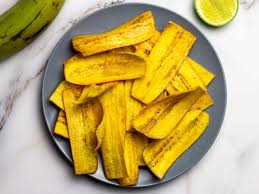

Plantain

Description:
Homemade plantain chips are a crunchy and addictive snack made from thinly sliced plantains fried to golden perfection. Whether using green or ripe plantains, a sprinkle of salt or additional seasonings enhances their delightful taste.
Ingredients:
- Vegetable oil, for deep-frying
- 2 green plantains, peeled and sliced 1/8-inch thick
- salt to taste
Steps
- Heat oil in deep-fryer to 375 degrees F (190 degrees C).
- Deep fry the plantain slices, about a dozen at a time, until golden brown on both sides, 3 to 4 minutes. Drain in a large bowl lined with paper towels, and salt to taste while still warm.